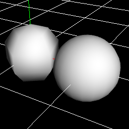
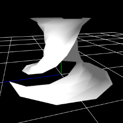
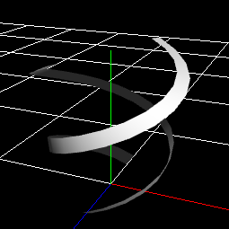
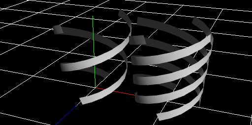
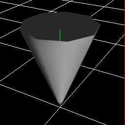
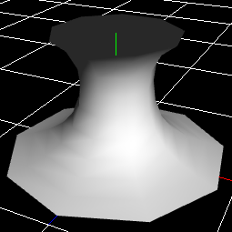
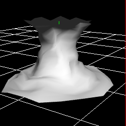
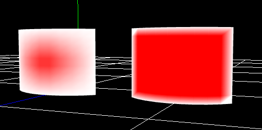
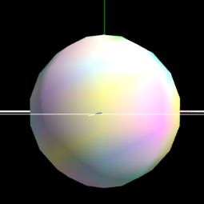

Procedural Model¶
Overview¶
This function allows you to create a 3D model by simply adjusting the parameters. Normally, you would need to use other software to create a 3D model, but you can create a simple 3D model within Effekseer.
Parameters¶
Type¶
Specifies the type of mesh to be generated.
Mesh¶
Generates the outer mesh of a sphere or cylinder, depending on the specified parameters. Basically, it generates a rotating object about an axis.
Region (angle)¶
Specifies the region of rotators to be generated. Normally, it is a circle, but it can be made into a cut out part of it.

Division¶
The number of divisions of the mesh.The larger this value is, the smoother it becomes.
Rotated angle¶
Twist the mesh.
Ribbon¶
Generates a shape that looks like it wraps around the mesh.
Cross-section¶
Specify the shape of the ribbon section.
Plane

Cross

Point
It is not displayed as a mesh, but can be used as a parameter for the spawn method.


Angles of ribbon¶
Specifies the amount of rotation from the viewpoint to the end point per ribbon.

The number of ribbons¶
Specifies the number of ribbons.
Shape Type¶
Specify the mesh shape of the actual model to be generated.

Cone¶
Cone. Radius and depth can be specified.
Cylinder¶
Cylinder. You can specify different values for the top and bottom radii of the cylinder. It can also be made into a disk by setting the depth to 0.

Spline¶
This is a rotator with four points specifying the sides. This is useful for expressing tornadoes, auras, etc.

Noise¶
It distorts the generated shape.
Tilt-noise¶
Causes the mesh to tilt at each axial position. It is suitable for creating meshes that are diagonal in each part, such as tornadoes.

Wave noise¶
Shake each position of the model with a wave. It is good for generating meshes that look like they are shaken by waves at regular intervals.

Curl-noise¶
For each position of the model, distort it in a random direction.
Vertex color¶
Specify a color for each position and interpolate the colors between them.

Position of center area¶
Specifies the position that the center specified by the vertex color indicates on the mesh.

Rate of center area¶
Specifies how much the center color specified by the vertex color will occupy the center area. The larger this value is, the more area the central vertex color occupies.
Vertex Color Noise¶
Adds colorful noise to the vertex color.
UV¶
Specifies the UV region to use for the mesh.